الفيضان المفاجئ
هل الأمر متعلّق بالتربة فقط؟
الرحلة على وشك أن تبدأ، لكنّ أمرا غير متوقّع يحدث.
تقيس دائرة الأرصاد الجويّة الطقس كلّ يوم على مدى عشرات السنين.
يمكن بناء نموذج عندما تتوفّر بيانات كثيرة جُمعت على مدى فترة طويلة.
أحد هذه النماذج هو المنحى هو الاتّجاه العامّ الذي
تتطوّر نحوه الأمور مع مرور الزمن.
مثال: استمرار شيء في الارتفاع
يُعدّ منحى تصاعديّا، واستمراره في الانخفاض يُعدّ منحى تنازليّا..
يعرض الرسم البيانيّ الذي أمامكم أحداث مطر قصيرة وغزيرة على مدى السنوات.
انقروا على الرسم البيانيّ لمشاهدة البيانات.
المصدر: الرسم البيانيّ مبنيّ على بيانات نُشرت في تقرير "تحليل الاتّجاهات المناخيّة والأحداث المتطرّفة في إسرائيل على مدى القرن الـ21"، دولة إسرائيل، وزارة المواصلات ودائرة الأرصاد الجويّة، سنة 5784 حسب التقويم العبريّ
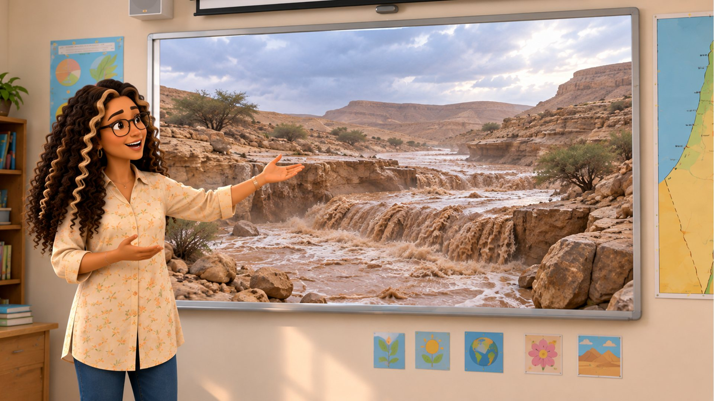
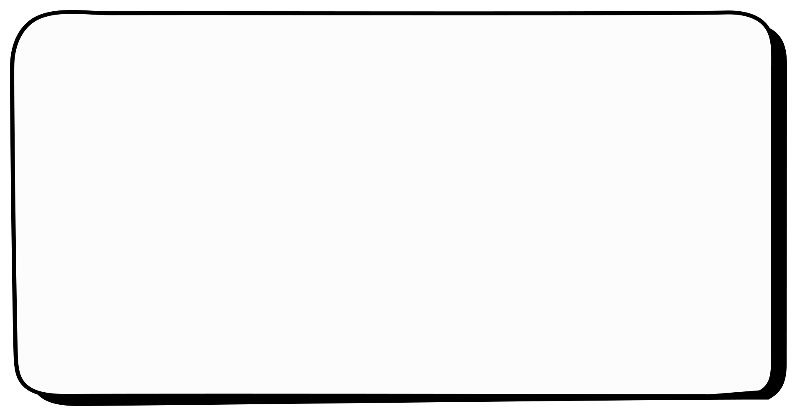
التغيّر في شدّة المطر في وسط البلاد على مدى عقود
شدّةالمطر
سؤال 1:
ماذا نستنتج من بيانات الرسم البيانيّ عن
منحى التغيّر في شدّة المطر في إسرائيل؟
اختاروا الإجابة الصحيحة.
طوال الفترات كلّها.
كلّما مرّت السنوات.
المطر المتطرّفة.
طوال الفترات المعروضة.
تحدث بشكل عشوائيّ، دون منحى واضح.
هذه ليست الإجابة.
عودوا إلى الرسم البيانيّ وتتبّعوا البيانات من اليسار إلى اليمين. هل تلاحظون اتّجاها عامّا للتغيّر؟
إجابتك صحيحة!
ترتفع شدّة أحداث المطر المتطرّفة على مدى الفترات المعروضة.
هذا خطأ، كلّ الاحترام على المحاولة.
ترتفع شدّة أحداث المطر المتطرّفة على مدى الفترات المعروضة.
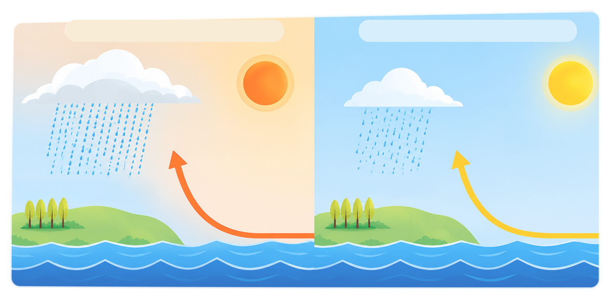
الوضع الحاليّ والمستقبليّ (احترار الهواء)
الوضع الطبيعيّ (دون تدخّل الإنسان)
كلّ ارتفاع بدرجة مئويّة
واحدة قد يؤدّي إلى
زيادة بنسبة 7% في كمّيّة بخار الماء...
يصعد الهواء الأكثر حرارة
مكوّنا الغيوم...
تتكوّن بذلك أمطار أغزر
يهطل المطر بعد ذلك...
المصدر: التقرير السنويّ 2025، استعداد دولة إسرائيل للتغيّر المناخيّ.
سؤال 2:
ما التفسير لارتفاع أحداث المطر الغزيرة والقصيرة نتيجة احترار الكرة الأرضيّة، بحسب النموذج (من نوع الرسم التخطيطيّ)؟
اختاروا الإجابة الصحيحة.
يهطل مطر غزير عندما يبرد في الأعالي.
نتيجة درجة الحرارة المرتفعة.
هذه ليست الإجابة.
تأمّلوا الرسم التوضيحيّ مرّة أخرى: ماذا يحدث لكمّيّة بخار الماء في الهواء عندما ترتفع درجة الحرارة؟
إجابتك صحيحة!
تسخن الكرة الأرضيّة أيضا عندما يسخن الهواء. يستطيع الهواء الساخن أن يحمل كمّيّة أكبر من بخار الماء. يحدث بعد ذلك أن يبرد الهواء فجأة، فينطلق كلّ الماء الذي كان يحمله ويهطل مطرا غزيرا جدّا.
هذا خطأ، كلّ الاحترام على المحاولة.
تسخن الكرة الأرضيّة أيضا عندما يسخن الهواء. يستطيع الهواء الساخن أن يحمل كمّيّة أكبر من بخار الماء. يحدث بعد ذلك أن يبرد الهواء فجأة، فينطلق كلّ الماء الذي كان يحمله ويهطل مطرا غزيرا جدّا.
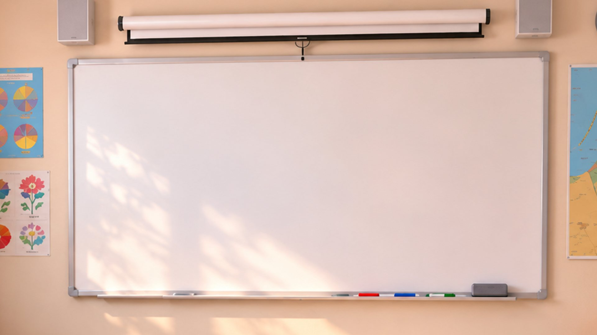
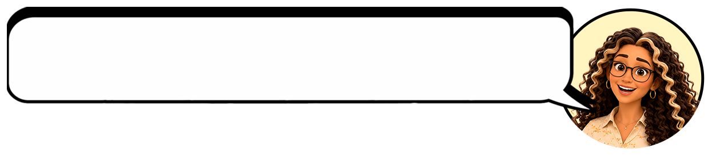
رأينا أنّ احترار الكرة الأرضيّة يرتبط بزيادة
أحداث المطر القصيرة. لماذا يسبّب مطر لساعات قليلة فقط
فيضانات مفاجئة كثيرة؟
انقروا على صور الطلاب والطالبات واكتشفوا ما كانت فرضيّاتهم.
تعلّمنا أنّ هناك أنواعا كثيرة من التربة\".
غير أنّني لست متأكّدا\".
الفيضانات المفاجئة ظاهرة سريعة وخطيرة، ولذلك لا يمكن دراستها عن قرب أثناء حدوثها.
سنستعين بالنماذج لدراسة الظاهرة بأمان – وهي أدوات تساعدنا على رؤية التغيّرات بوضوح.
يعرض اللوح عاملين طرحتموهما في فرضيّاتكم. سنفحص الآن كلّ واحد منهما بواسطة نموذج.
انقروا على الفرضيّة الأولى للبدء.
انتبهوا : الفيضانات المفاجئة في النقب ظاهرة تنجم عن عدّة عوامل تعمل معا وتؤثّر بعضها في بعض.
المهمّ إذًا أن نفحص كلّ الفرضيّات، لا فرضيّة واحدة فقط.
يجب أن نرى ما يحدث للماء عندما يصل إلى أنواع مختلفة من التربة لفحص هذه الفرضيّة.
لا يمكن في الواقع رؤية ما يحدث داخل التربة، لذلك سنستخدم نموذجا من نوع المحاكاة.
شغّلوا المحاكاة وتتبّعوا كمّيّة الماء التي تتسرّب في كلّ نوع من أنواع التربة.
الفرضيّة 1: نوع التربة في النقب لا يسمح بتسرّب الماء عبرها.
هل تؤثّر أنواع التربة في النقب في حدوث الفيضان المفاجئ؟
شاهدوا المحاكاة وافحصوا: كم من الماء سيتسرّب عبر كلّ نوع من أنواع التربة؟
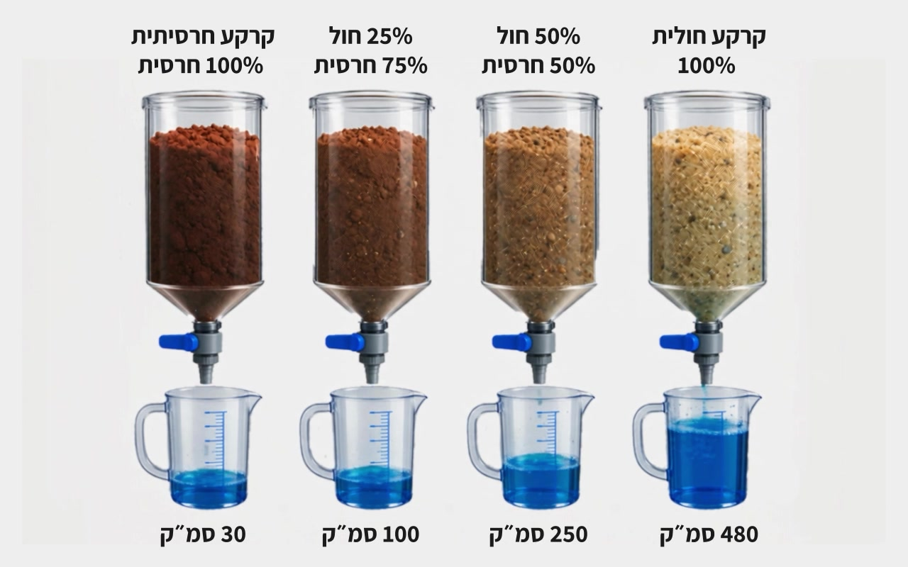
سؤال 3:
افحصوا كمّيّات الماء المتجمّعة في كؤوس القياس.
ما الاستنتاج من نتائج التجربة؟
اختاروا الإجابة الصحيحة.
قلّت كمّيّة الماء التي تسرّبت.
زادت كمّيّة الماء التي تسرّبت.
قلّت كمّيّة الماء التي تسرّبت.
قلّت كمّيّة الماء التي تسرّبت.
حاولوا مرّة أخرى.
تأمّلوا نتائج التجربة وقارنوا بين كمّيّة الماء التي تسرّبت في التربة الرمليّة وبين الكمّيّة التي تسرّبت في التربة الطينيّة. ماذا ترون؟
إجابتك صحيحة!
حبيبات الطين صغيرة جدّا، ولذلك تكون التربة الطينيّة متراصّة وذات مسامّ صغيرة، ويصعب على الماء المرور عبرها. الرمل في المقابل حُبيبيّ وذو مسامّ كبيرة، ولذلك يسمح بتسرّب أسرع.
هذا خطأ، كلّ الاحترام على المحاولة.
حبيبات الطين صغيرة جدّا، ولذلك تكون التربة الطينيّة متراصّة وذات مسامّ صغيرة، ويصعب على الماء المرور عبرها. الرمل في المقابل حُبيبيّ وذو مسامّ كبيرة، ولذلك يسمح بتسرّب أسرع.

فُحصت الفرضيّة! اكتشفنا أنّ الماء يتسرّب ببطء أكبر في التربة الطينيّة،
الأمر الذي يساهم في حدوث الفيضان المفاجئ. بقيت لدينا فرضيّة أخرى تتعلّق بعامل عرض الوادي.
انقروا على 'مجاري الأودية' وهيّا نبحث!
هيّا ننظر عن قرب إلى عدّة أودية في صحراء إسرائيل لفحص هذه الفرضيّة. تأمّلوا مجاري الأودية: ما المشترك بينها؟
الفرضيّة 2: أودية الصحراء ضيّقة وجافّة معظم أيّام السنة، ولذلك يكون فيها جريان قويّ للماء.
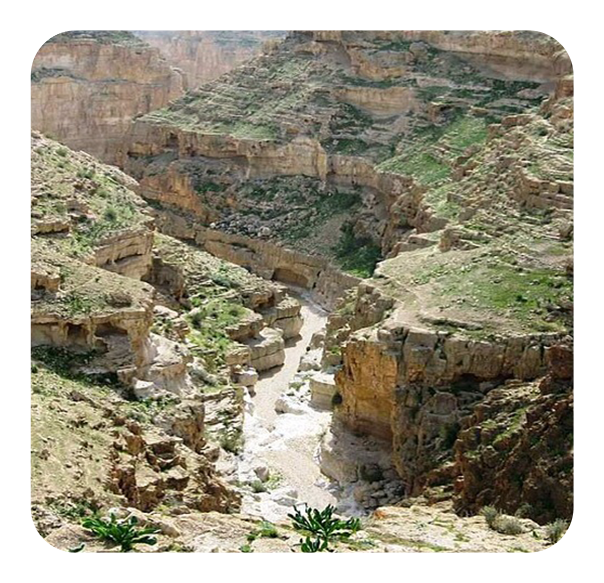
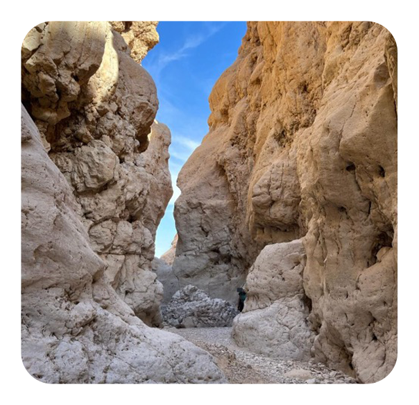
تصوير: إستر عنبر / Wikimedia Commons
تصوير: نيكول سكير / جمعيّة حماية الطبيعة
رأينا أنّ مجرى الماء في كلا الواديين ضيّق. هل يؤثّر عرض الوادي، مع ذلك، حقّا في جريان الماء فيه؟
سنستعين بالنموذج مرّة أخرى لفحص هذه الفرضيّة، لأنّه لا يمكن في الواقع التواجد في الوادي أو بالقرب منه أثناء الفيضان المفاجئ.
تصوير: إستر عنبر / Wikimedia Commons
تصوير: نيكول سكير / جمعيّة حماية الطبيعة
تحاكي المحاكاة التي أمامكم ثلاثة مجاري أودية: مجرى ضيّق ومجرى متوسّط ومجرى واسع.
ستجري في كلّ القنوات الكمّيّة نفسها من الماء، بالشدّة نفسها وفي الوقت نفسه.
شغّلوا وشاهدوا ما يتغيّر.
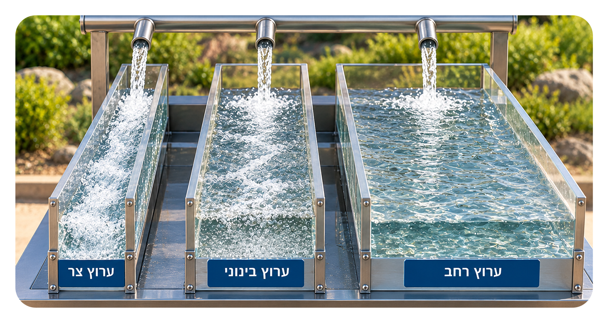
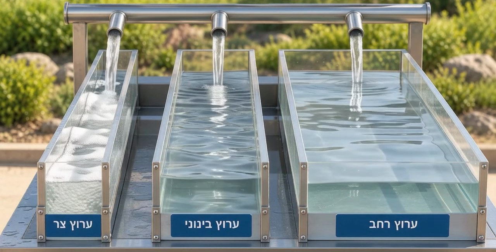
سؤال 4:
ما العلاقة بين عرض الوادي وبين سرعة جريان الماء فيه؟
اختاروا الإجابة الصحيحة.
حاولوا مرّة أخرى.
تأمّلوا القنوات الثلاث: في أيّ قناة جرى الماء أسرع؟
إجابتك صحيحة!
يتركّز الماء في المجرى الضيّق في مساحة صغيرة، ولذلك يجري بسرعة وقوّة كبيرتين. تتوزّع الكمّيّة نفسها من الماء في المجرى الواسع على مساحة أكبر، ولذلك يكون الجريان أبطأ وأضعف. يمكن للمطر الغزير في أودية النقب الضيّقة أن يُنتج بسرعة جريانا قويّا وفيضانا مفاجئا.
هذا خطأ، كلّ الاحترام على المحاولة.
يتركّز الماء في المجرى الضيّق في مساحة صغيرة، ولذلك يجري بسرعة وقوّة كبيرتين. تتوزّع الكمّيّة نفسها من الماء في المجرى الواسع على مساحة أكبر، ولذلك يكون الجريان أبطأ وأضعف. يمكن للمطر الغزير في أودية النقب الضيّقة أن يُنتج بسرعة جريانا قويّا وفيضانا مفاجئا.
انتهينا من فحص العوامل الثلاثة في فرضيّاتنا: شدّة المطر ونوع التربة وعرض الوادي. اكتشفنا أنّ لكلّ واحد من هذه العوامل تأثيرا في حدوث الفيضان المفاجئ.
فحصنا حتّى الآن كلّ عامل على حدة. غير أنّ كلّ العوامل تعمل في الطبيعة معا في الوقت نفسه.
سنفحص الآن كيف يؤثّر الجمع بينها في شدّة الفيضان المفاجئ.
اختاروا الظروف، شغّلوا المحاكاة واكتشفوا ماذا سيحدث للماء؟
سؤال 5:
أيّ توليفة تُنتج الفيضان المفاجئ الأقوى والأخطر؟
أكملوا الكلمات الناقصة في الفقرة بجرّ الكلمات من مخزن الكلمات.
توليفة من وغزير، وتربة طينيّة، كبيرة، وخانق ضيّق تُنتج ظروفا مناسبة لحدوث الفيضان المفاجئ.
يُنزل المطر الغزير كمّيّة كبيرة من الماء في ، لكنّ التربة الطينيّة تكاد لا تُتيح ،
ولذلك يجري معظم الماء على سطح الأرض. ينصبّ الماء في ،
فيتجمّع بسرعة ممّا يؤدّي إلى ومفاجئ وإلى حدوث فيضان مفاجئ.
حاولوا مرّة أخرى!
بعض الكلمات ليست في مكانها المناسب بعد. اقرأوا كلّ جملة مع الكلمة التي اخترتموها وافحصوا هل هي منطقيّة.
إجابتك صحيحة!
هذا خطأ، كلّ الاحترام على المحاولة.
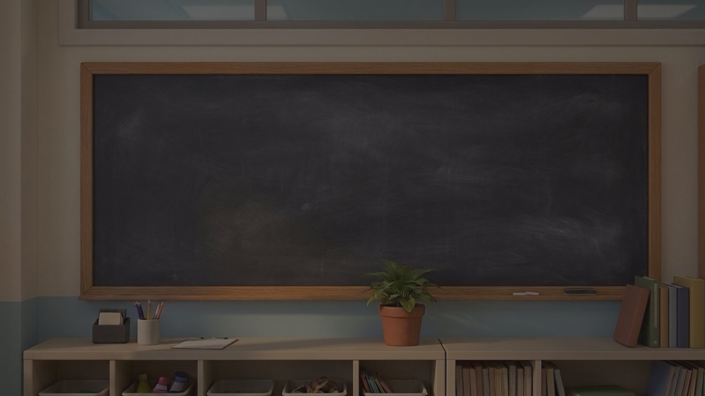
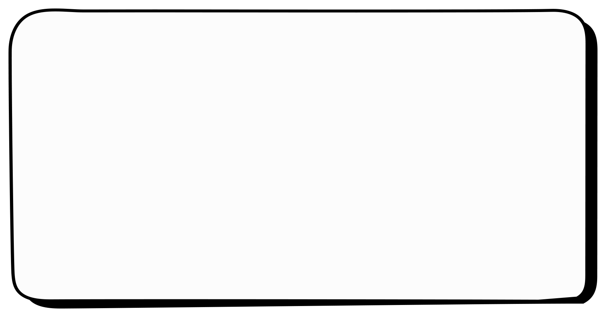
سؤال 6:
بحثنا الظاهرة بعمليّة منظّمة لنفهم تفسير ظاهرة الفيضانات المفاجئة في النقب.
اختلطت المراحل. جرّوا الجمل إلى المكان المناسب بجانب الأرقام.
رتّبوها بحسب ترتيب مراحل البحث – من المرحلة الأولى حتّى المرحلة الأخيرة.
- 1
- 2
- 3
- 4
- 5
حاولوا مرّة أخرى!
تذكّروا الفرضيّات وطريقة فحصها.
إجابتك صحيحة!
نبدأ بطرح الفرضيّات، مرورا بالفحص وجمع البيانات، وحتّى مقارنة النتائج واستخلاص الاستنتاجات.
هذا خطأ، كلّ الاحترام على المحاولة.
نبدأ بطرح الفرضيّات، مرورا بالفحص وجمع البيانات، وحتّى مقارنة النتائج واستخلاص الاستنتاجات.
سؤال 7:
لماذا يستخدم العلماء نماذج مثل الرسوم البيانيّة والرسوم التوضيحيّة وتجارب المحاكاة؟
اختاروا الإجابة الصحيحة.
فكّروا لماذا استخدمنا الرسوم البيانيّة والرسوم التوضيحيّة والمحاكاة لدراسة الفيضانات المفاجئة.
ما الذي سمحت لنا النماذج بفعله ولا يمكننا دائما فعله في الواقع؟
إجابتك صحيحة!
تتيح لنا النماذج تمثيل الظواهر والعمليّات ودراستها حتّى عندما تكون مشاهدتها المباشرة في الواقع صعبة أو خطيرة.
هذا خطأ، كلّ الاحترام على المحاولة.
تتيح لنا النماذج تمثيل الظواهر والعمليّات ودراستها حتّى عندما تكون مشاهدتها المباشرة في الواقع صعبة أو خطيرة.
سؤال 8:
لماذا كان من المهمّ خوض التجربة في هذه الوحدة التعليميّة؟
اختاروا الإجابات الصحيحة كلّها.
هذه ليست الإجابة.
أيّ بنود أخرى مناسبة؟
أنتم في الاتّجاه الصحيح!
توجد إجابات صحيحة أخرى. أيّ بنود أخرى مناسبة؟
إجابتك صحيحة!
بيّنت التجربة في الوحدة التعليميّة كيف يمكن الاستعانة بالنماذج لدراسة عوامل وعمليّات يصعب مشاهدتها مباشرة في الواقع.
هذه إجابة جزئيّة.
بيّنت التجربة في الوحدة التعليميّة كيف يمكن الاستعانة بالنماذج لدراسة عوامل وعمليّات يصعب مشاهدتها مباشرة في الواقع.
هذا خطأ، كلّ الاحترام على المحاولة.
بيّنت التجربة في الوحدة التعليميّة كيف يمكن الاستعانة بالنماذج لدراسة عوامل وعمليّات يصعب مشاهدتها مباشرة في الواقع.
بدأت السماء تصفو في نهاية اليوم. عرف الأطفال أنّ الرحلة أُجّلت،
غير أنّ يوما سيأتي يستطيعون فيه الخروج إلى الصحراء ومشاهدة الحلمونيّات في أجمل حلّتها.
عاد الأطفال إلى بيوتهم متحمّسين ومليئين بالتوقّع – فهم يعرفون الآن ليس فقط كيف تبدو الحلمونيّات،
بل أيضا كيف تنشأ الفيضانات المفاجئة في الصحراء.
الآن، عودوا إلى النموذج،
اضغطوا على زرّ "الصفحة التالية"
وأجيبوا عن الأسئلة.
يمكن إغلاق هذه النافذة.